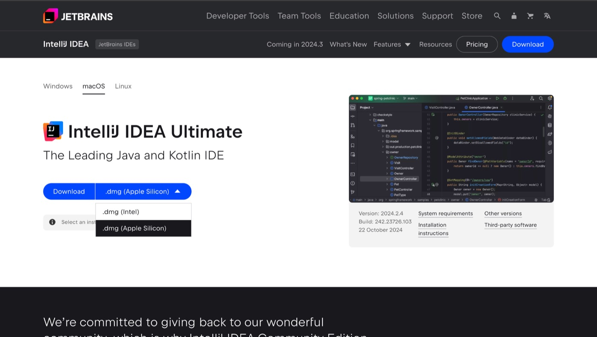
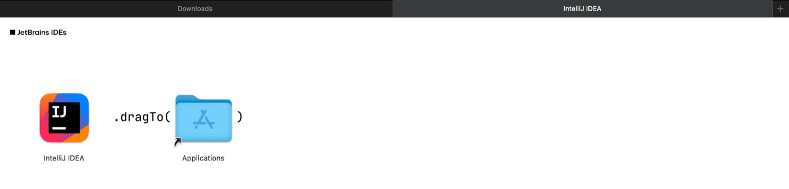
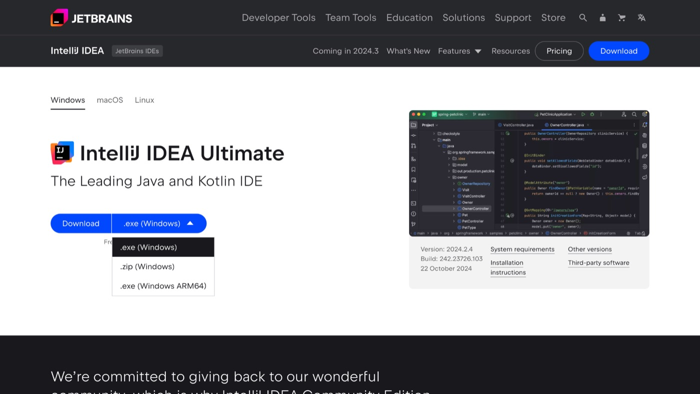
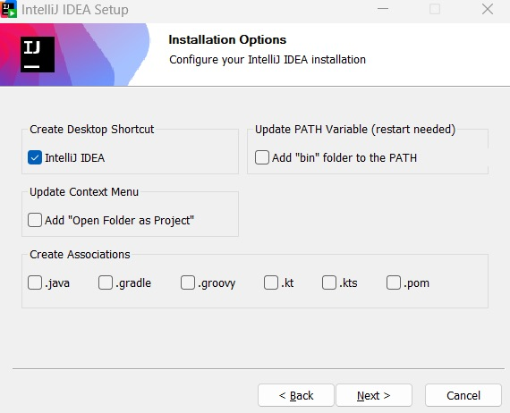
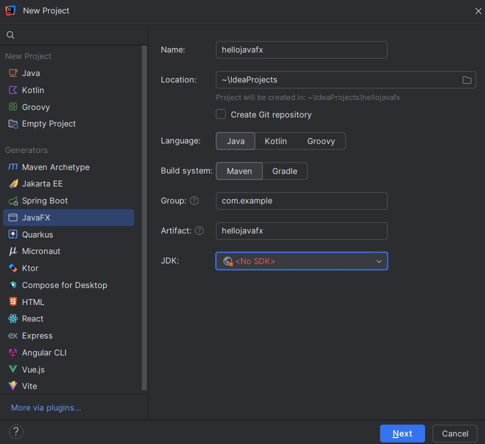
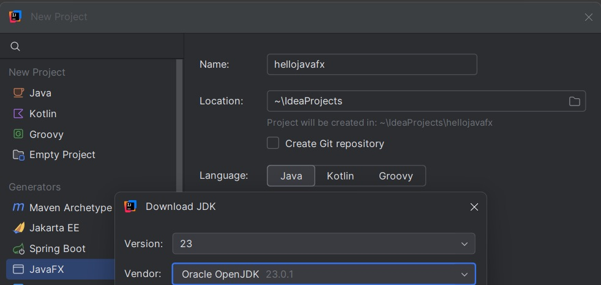
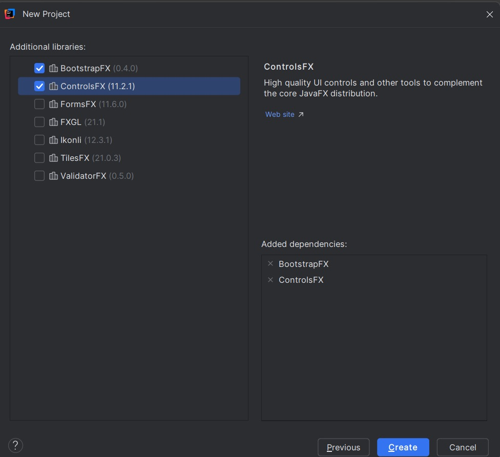
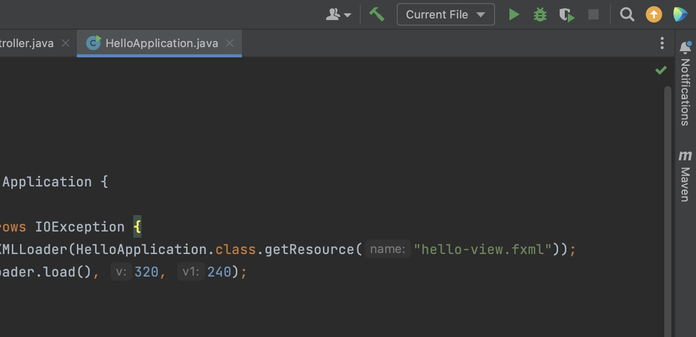
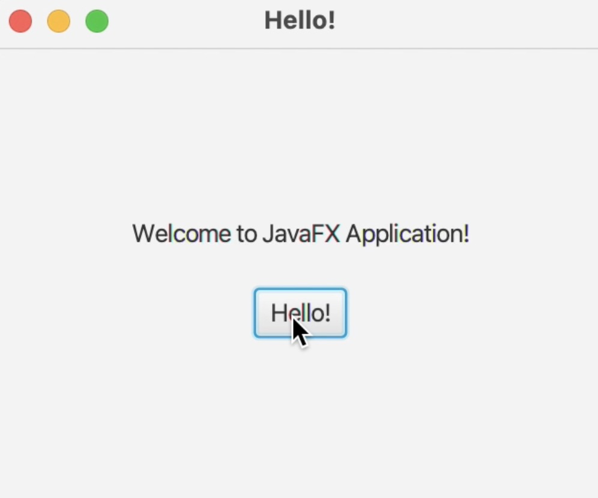

This guide gets IntelliJ IDEA and a working JavaFX project running on your own laptop, before your first assignment. It's for students in Introduction to Software Engineering who haven't set up a Java development environment before. Plan for about 20 minutes, most of it waiting for downloads.
When you finish, you'll have run a sample JavaFX app, which tells you everything is configured correctly.
Before you start
- Check your processor. On a Mac, open the Apple menu and select About This Mac. If you see Chip: Apple M1 (or M2, M3, M4), you have Apple silicon. If you see Processor: Intel, you have an Intel Mac. On Windows, most laptops use the standard installer. Use the ARM64 installer only if your laptop has an ARM processor.
- Use an account that can install apps. Windows asks for permission during the install.
- Stay on a reliable connection. IntelliJ IDEA and the Java Development Kit (JDK) are large downloads.
Install IntelliJ IDEA
Download IntelliJ IDEA Community Edition from the JetBrains download page. Community Edition is free and has everything this course needs.
macOS
- On the download page, choose the .dmg for your processor: Apple Silicon or Intel.

- In your Downloads folder, double-click the .dmg file to open it.
- Drag the IntelliJ IDEA icon into the Applications folder, and wait for the copy to finish.

- Open Applications and double-click IntelliJ IDEA. If macOS asks whether you want to open an app downloaded from the internet, select Open.
Windows
- On the download page, choose .exe (Windows), or .exe (Windows ARM64) for an ARM laptop.

- In your Downloads folder, double-click the .exe file. If Windows asks whether to allow the app to make changes, select Yes.
- In the installation wizard, select Create Desktop Shortcut, then Next.

- Keep the default install location and select Install. IntelliJ IDEA starts when the install finishes.
Create a JavaFX project
These steps are the same on macOS and Windows.
- On the Welcome screen, select New Project.
- Under Generators on the left, select JavaFX.
- In Name, enter
hellojavafx. Change Location only if you keep your coursework somewhere else.

- Next to JDK, if no JDK is listed, select Download JDK:
- Version: the latest version.
- Vendor: Oracle OpenJDK. On an Apple silicon Mac, choose the build marked aarch64.
- Select Download, and wait for it to finish.

- Select Next. Leave the optional libraries cleared unless your assignment asks for one, and select Create.

IntelliJ IDEA builds the project structure. When it's done, the project files appear in the Project pane on the left.
Run the sample app
- Select the green Run button (►) at the top right of the window.

- Wait for the build to finish.
A small window titled Hello! appears. Select its Hello! button, and the message Welcome to JavaFX Application! appears. If you see that message, your setup is complete. Close the window and you're ready for the first assignment.

Troubleshooting
"JavaFX runtime components are missing"
The project can't find the JavaFX libraries. Add them from Maven:
- Select File > Project Structure.
- Select Libraries, then the + button, then From Maven.
- Add both of these libraries, one at a time:
org.openjfx:javafx-controls:21.0.1org.openjfx:javafx-fxml:21.0.1
- Select Apply, then OK, and run the app again.
"Module not found"
JavaFX isn't listed as a dependency of your module.
- Right-click the project folder in the Project pane and select Open Module Settings.
- Select Modules, then the Dependencies tab.
- Make sure the JavaFX libraries are in the list. If they aren't, add them with the steps in the previous section.
The app still doesn't start
- Make sure your antivirus software isn't blocking Java applications.
- Update IntelliJ IDEA from Check for Updates, then restart it.
- Still stuck? Bring your laptop to office hours, or post the full error message in the course FAQ thread.